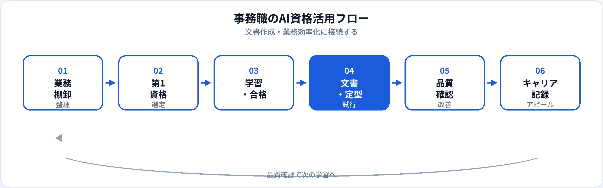

一般事務・総務アシスタント・秘書・バックオフィスなど、事務職は「書く・整える・回す」業務が中心です。生成AIは、メール文案、議事録のたたき台、社内文書の下書きを効率化できます。一方、個人情報の入力や誤った日付・金額は大きなリスクになります。本記事では、事務職が取るべきAI資格を比較し、業務別の活用からキャリアまで2026年6月時点で整理します。非エンジニア向け・マーケ職向けの記事も併せて参照してください。
事務職にAI資格が効く理由
事務職の評価は「正確さ」と「スピード」の両立です。資格学習は、生成AIを下書きツールとして使いつつ、最終確認と情報管理を人間が担う——という型を身につける助けになります。
定型業務の短縮
メール・案内文・議事録・報告書の骨子を速く作り、確認・調整・送付に時間を割ける。
情報管理の判断力
何をAIに入力してよいか、社内規定と照らして判断できる。生成AIパスポートは個人情報・機密情報の章が実務に直結する。
社内DXの入口
部署のAI活用リーダー、社内マニュアル整備、問い合わせ一次対応の改善など、事務経験が活きる役割に接続できる。
試験対策はこちら
事務の種類と資格の効き方
| 事務の種類 | AI資格の主な役割 | 第1候補の目安 |
|---|---|---|
| 一般事務・庶務 | メール、案内文、備品・予約関連の文案 | 生成AIパスポート |
| 秘書・役員アシスタント | スケジュール文案、資料骨子、来客案内文 | 生成AIパスポート（情報管理を重点） |
| 経理アシスタント・精算事務 | 説明文、問い合わせ返信、手順書の下書き | 生成AIパスポート → ITパスポート（任意） |
| 社内ヘルプデスク・問合せ対応 | FAQ案、一次回答のたたき台、マニュアル更新 | 生成AIパスポート ＋ ITパスポート（任意） |
| 社内DX・AI推進サポート | 利用ガイド、研修資料、ルール整備 | 生成AIパスポート → G検定（任意） |
業務別：生成AIの活用シーン
| 業務 | 生成AIの使い方（例） | 資格で学ぶ関連知識 |
|---|---|---|
| 社内外メール | 件名案、本文のたたき台、敬語・トーン調整 | プロンプト設計、出力確認 |
| 議事録 | メモからの構造化、決定事項・ToDoの抽出 | Human-in-the-Loop、事実確認 |
| 社内通達・案内文 | 章立て、読みやすい文案、FAQ案 | 社内ルールとの整合、情報区分 |
| マニュアル・手順書 | 手順の文章化、更新差分の整理 | 正確性の最終確認は人間 |
| Excel・集計の説明 | 集計結果の要約文案、報告書の骨子 | 数値は元データと突合 |
| 問い合わせ一次回答 | 定型回答案、エスカレーション判断の補助 | 個人情報入力禁止、ハルシネーション |
おすすめ資格の比較
| 資格 | 事務職との相性 | 学習時間目安 | 向いている事務 |
|---|---|---|---|
| 生成AIパスポート | ◎ 文書・メール・議事録に直結 | 20〜40時間 | 一般事務、秘書、問合せ対応全般 |
| ITパスポート | ○ 社内システム・セキュリティの土台 | 40〜80時間 | ヘルプデスク、システム連携が多い事務 |
| G検定 | △ 社内AI推進・DXサポート | 80〜150時間 | AI導入支援、データ活用企画の補助 |
| 簿記・経理系（参考） | ○ 経理事務の専門性（AI資格とは別軸） | — | 経理アシスタント（AIは文案・手順書に限定） |
第1候補と学習順
-
第1：生成AIパスポート
メール・議事録・社内文書のたたき台づくりにすぐ効く。合格後、週次で使う定型業務1つに試験導入する。
-
第2（任意）：ITパスポート
社内システム、セキュリティ、クラウドツールの用語整理。PC操作に不安がある場合は先にITパスポートも可。
-
第3（任意）：G検定
社内AI推進リーダー、DXプロジェクトのサポート役を目指す場合。
| あなたの事務業務 | 第1候補 |
|---|---|
| メール・文書・議事録が中心 | 生成AIパスポート |
| 社内システム・問合せ対応が中心 | ITパスポート → 生成AIパスポート |
| 社内AI活用の推進役 | 生成AIパスポート → G検定 |
| 経理アシスタント（数字・手順が多い） | 生成AIパスポート（数値確定は人間） |
事務職の活用フロー

事務では入力→下書き→確認→確定→保管の流れが基本です。AIは下書きまでを速くし、正確性と情報管理は人間が担う——この分担をフローに組み込みます。
合格後の実践（定型業務の効率化）
メールテンプレート集
「依頼・確認・お礼・催促」の4型プロンプトを固定。宛名・日付・件名は毎回人が差し替え。
議事録フォーマット
「日時・参加者・決定事項・ToDo・次回」の構造を指定。音声文字起こしは社内ルールに従い、最終版は人が確定。
社内FAQ更新サイクル
問合せログからFAQ候補を抽出→担当者が回答を確定→マニュアルに反映。AIは候補出しまで。
事務職の評価はミスなく回す力です。AIで短縮した時間を、ダブルチェックと関係者調整に再投資することが、信頼維持とキャリアの両方に効果的です。
事務現場の注意点
| やってよいこと | 避けるべきこと |
|---|---|
| 匿名化した文案・構成案の生成 | 顧客名・社員情報・契約内容の入力 |
| 公開手順に基づくマニュアル下書き | 日付・金額・承認番号を検証なしで確定 |
| 社内トーンに合わせた敬語調整 | 社外秘資料を個人の無料AIにそのまま貼付 |
| FAQ候補の列挙と分類 | 法務・人事判断をAIだけで下す |
生成AIパスポート第4章（個人情報・著作権・倫理）は、事務職が社内ルールを説明できるレベルまで整理するのに向いています。
キャリア・転職でのアピール
現職（事務のまま）
「生成AIパスポート（年月）」と、議事録作成時間○%短縮「問合せ一次回答の標準化」などをセットで記載。社内AI利用ガイドの起草・更新への参画もアピール材料になります。
転職・キャリアチェンジ
- 社内DX・AI推進（事務系） 文書標準化 ＋ 生成AIパスポート ＋ 利用ガイド策定実績
- カスタマーサクセス・アカウント管理 調整力 ＋ 生成AIパスポート ＋ 顧客対応実績（営業記事も参照）
- オペレーション・バックオフィス改善 業務フロー整理 ＋ 生成AIパスポート ＋ 効率化の数値
- プロンプトエンジニア（業務寄り） 社内定型プロンプト設計 ＋ 生成AIパスポート（詳細）
資格の一般的な活かし方はAI資格はキャリアにどう役立つ？、履歴書は記載例ガイドを参照。
資格だけでは足りない点
事務職の評価は正確性・信頼・調整力です。資格はリテラシーの証明になりますが、社内政治・優先順位・例外対応は現場経験で培う領域です。合格後は、リスクの低い定型業務から小さく試し、確認フローを必ず残してください。
よくある質問
事務職におすすめのAI資格はどれ？
文書・メール効率化が主なら生成AIパスポート。システム用語の整理ならITパスポート、社内AI推進ならG検定も検討。
ITパスポートと生成AIパスポートはどちらから？
すぐ業務に使うなら生成AIパスポートが先。PC・セキュリティに不安がある場合はITパスポートから始める選択も有効です。
社内文書に生成AIを使ってよい？
社内規定と情報区分を確認。個人情報・未公開情報は入力しない。AI出力はたたき台と割り切り、人が最終確定する。
事務からAI関連職に転職できる？
可能です。正確な文書管理と調整力は社内推進・CS等で強み。資格に加え業務改善実績があると説得力が増します。